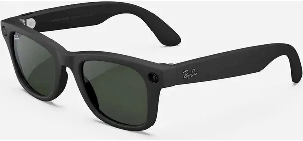
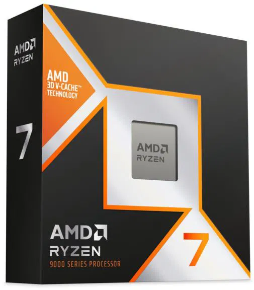
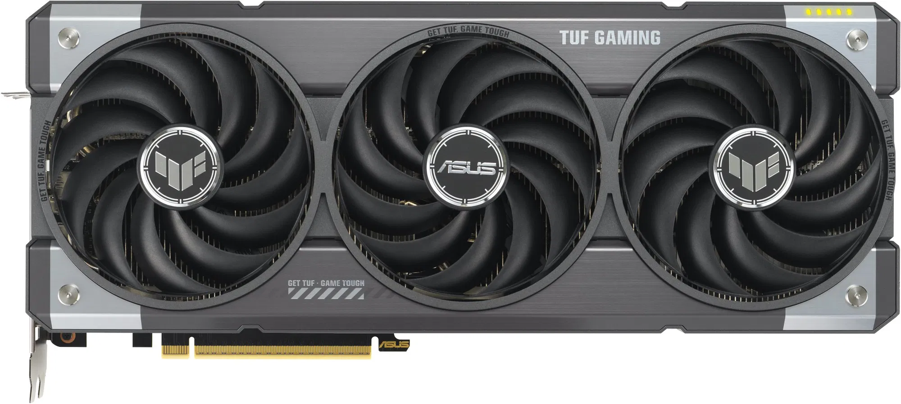
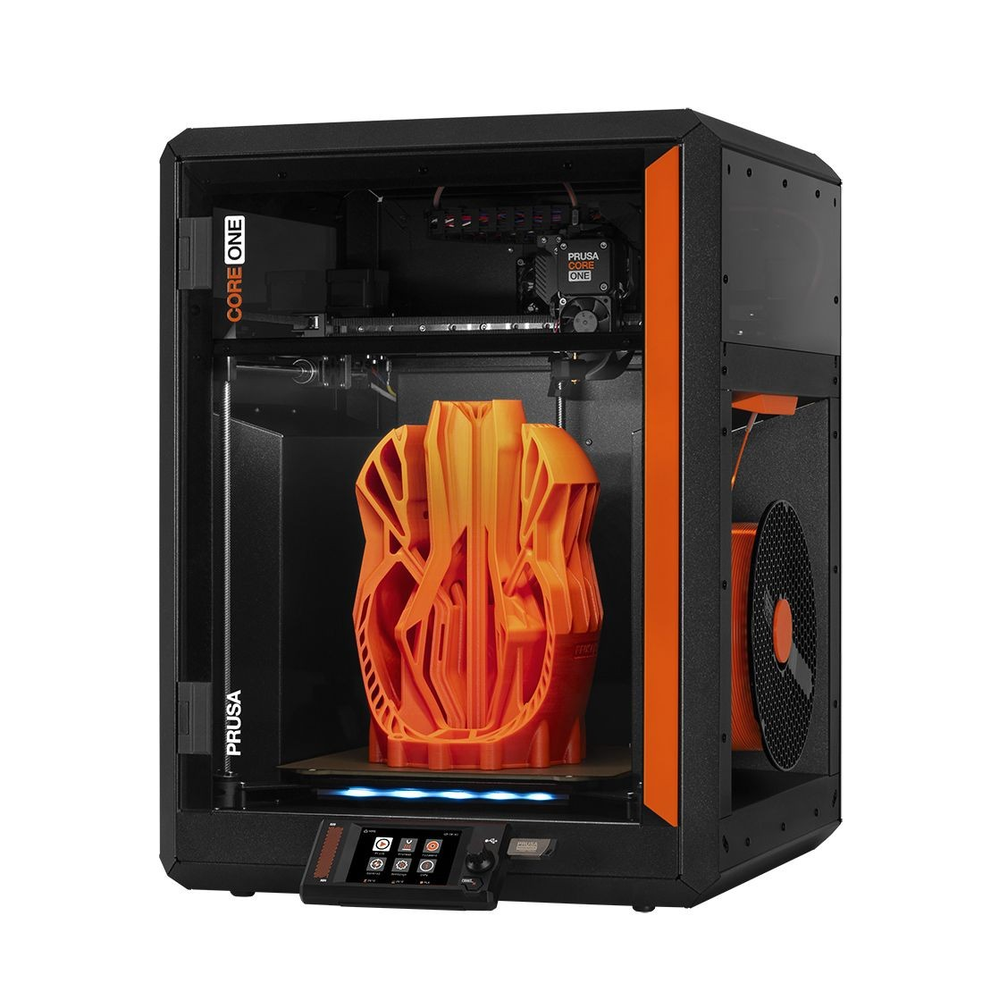

Samsung představuje špičkový herní monitor 49" OLED G9 s rozlišením Dual QHD a obnovovací frekvencí 240 Hz. Díky technologii OLED nabízí neuvěřitelné kontrastní poměry, syté barvy a téměř okamžitou dobu odezvy 0.03 ms. Ultraširoký poměr stran 32:9 vás zcela vtáhne do hry i do práce na několika oknech současně. Technologie AMD FreeSync Premium Pro a NVIDIA G-SYNC kompatibilita zajišťují plynulé zobrazení bez trhání. Zakřivení 1800R podporuje přirozené zorné pole a minimalizuje únavu očí. Tento monitor je ztělesněním toho nejlepšího, co dnes může hráč mít.
Rozlišení: 5120×1440 (Dual QHD)
Obnovovací frekvence: 240 Hz
Doba odezvy: 0.03 ms
Technologie: OLED, FreeSync, G-SYNC kompatibilní
Porty: HDMI 2.1, DisplayPort 1.4, USB hub
Cena: 42 990 Kč
Meta RAY-BAN Meta Wayfarer Glasses – Matte Black, Polarized Gradient Graphite

Ray-Ban Meta Wayfarer představují novou éru chytrých brýlí – stylově spojují klasický design s nejmodernější technologií od společnosti Meta. Umožňují pořizování fotografií a videí ve Full HD kvalitě, přímé živé přenosy na sociální sítě, a přístup k hlasovému asistentovi Meta AI. Polarizované čočky chrání vaše oči před UV zářením a zároveň poskytují skvělý kontrast. Mikrofony a reproduktory s potlačením okolního hluku umožňují pohodlné telefonování i poslech hudby, a to bez potřeby sluchátek. Baterie vydrží celý den a ovládání je intuitivní pomocí dotyku a hlasu.
Rozlišení videa: Full HD
Ovládání: Hlasové a dotykové
Čočky: Polarizované, Gradient Graphite
Připojení: Bluetooth, Wi-Fi
Výdrž baterie: až 6 hodin aktivního používání
Cena: 9 490 Kč
AMD Ryzen 7 9800X3D

Nový AMD Ryzen 7 9800X3D je nejnovější přírůstek do rodiny procesorů s revoluční technologií 3D V-Cache. Nabízí 8 jader a 16 vláken, základní takt 4.5 GHz a boost až na 5.7 GHz. Díky masivní cache paměti poskytuje bezkonkurenční výkon zejména ve hrách a náročných aplikacích. Vyroben 4nm technologií s architekturou Zen 5, tento procesor dosahuje extrémní energetické efektivity. Je ideální volbou pro hráče a kreativní profesionály hledající maximální výkon bez kompromisů.
Počet jader/vláken: 8 / 16
Základní/Boost takt: 4.5 GHz / 5.7 GHz
Cache: 96 MB 3D V-Cache
Socket: AM5
Spotřeba: 120 W TDP
Cena: 11 990 Kč
ASUS TUF GeForce RTX 5070 Ti O16G GAMING

ASUS TUF RTX 5070 Ti O16G je grafická karta nové generace postavená na architektuře NVIDIA Ada Lovelace. Nabízí 16 GB GDDR7 paměti, vysoký takt a výkonný systém chlazení s trojitými ventilátory a kovovým backplate. Tato karta podporuje ray tracing třetí generace, DLSS 3.5 a akcelerovaný rendering v profesionálních aplikacích. Díky robustnímu zpracování a vojenským standardům kvality TUF je ideální pro náročné herní sestavy i pracovní stanice.
Paměť: 16 GB GDDR7
Architektura: Ada Lovelace
Chlazení: 3 ventilátory, kovový backplate
Porty: 3x DisplayPort 2.1, 2x HDMI 2.1a
Napájení: 2x 8-pin, doporučený zdroj 750 W
Cena: 23 990 Kč
Prusa CORE One

Prusa CORE One je nový přírůstek do rodiny české značky Prusa ‐ robustní a zároveň kompaktní 3D tiskárna využívající CoreXY mechaniku pro vysokou přesnost a rychlost tisku. Tiskárna je plně sestavená a připravena k použití, vybavena novým extruderem Nextruder s automatickou kalibrací a podporou vysokoteplotních filamentů včetně ASA, PC a Nylonu. Má dotykový displej, Wi-Fi připojení a podporu pro vzdálené sledování přes Prusa Connect.